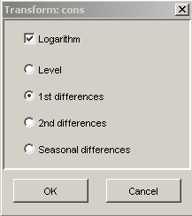

Transform Dialog
The transform dialog allows to do the most common transform
operations on the set of selected time series. The
transformation results in new series which are added to the
time series list with a descriptive suffix, indicating the type
of the transformation.
- If LOGARITHM is selected, then
the natural logarithm of the series is taken. An error
message is generated if there are values
<=0
in the series to transform.
- LEVEL means that no differences are taken.
Seasonal differences are not possible with series that have
frequency 1.
- A difference transformation together with the logarithm
results in differences of logarithms of the original
series.
- If LEVEL is selected and the LOGARITHM is not checked, then
nothing is done.
